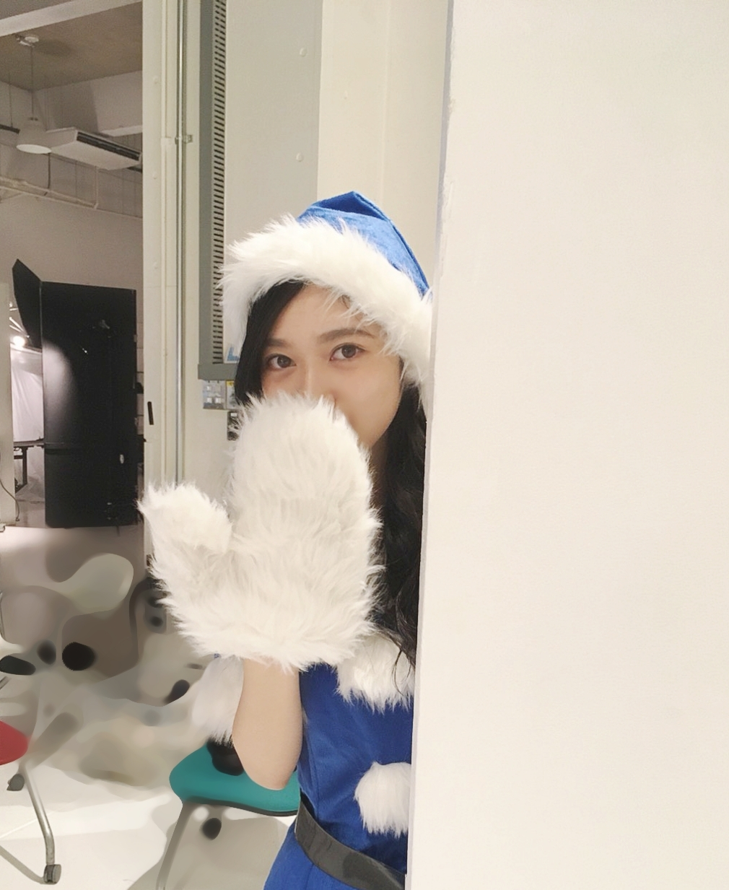
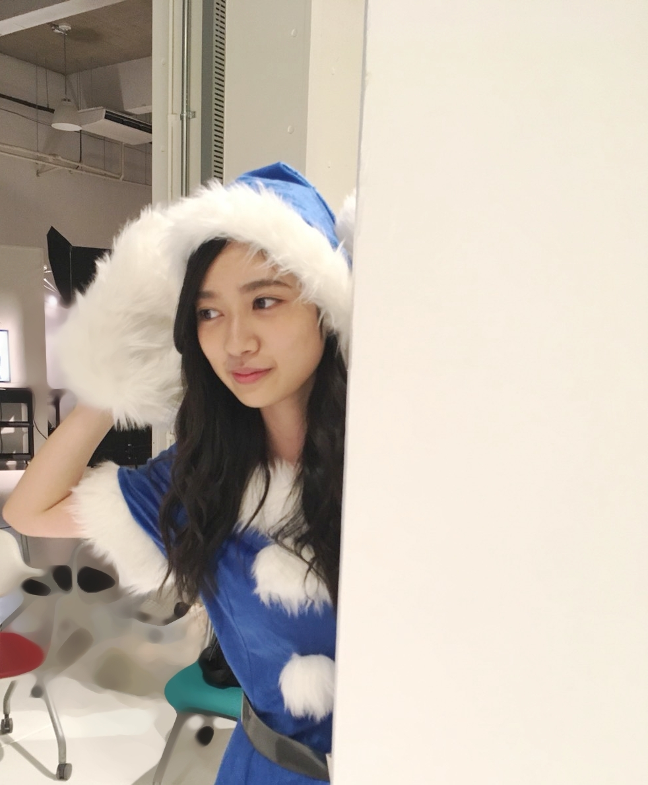
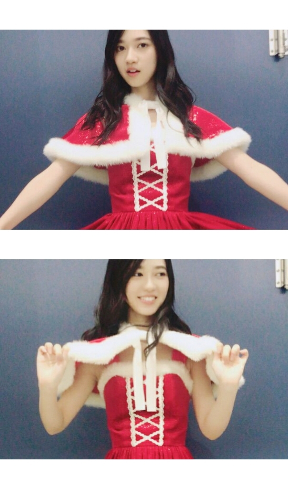
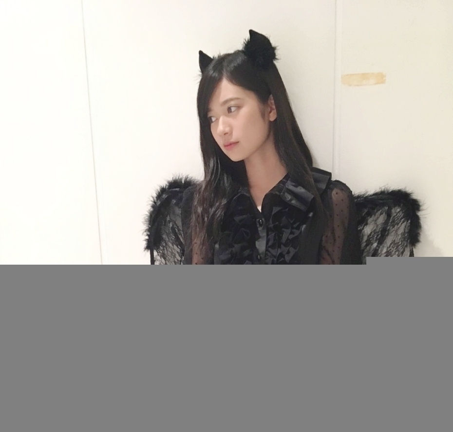

2017/1225Mon1000000RT
1000000RT
リツイートとかハッシュタグとかまじまんじとか
私はまじまんじの意味を理解できぬまま終わりました、、、
なんか近年の言葉も覚えなきゃって
こういうの使えるのって若いうちだけな気がして
でも、古き良き日本語私は好きだよー(..)
メリークリスマス✨


クリスマスらしい画像を貼らなきゃという使命感にかられブログを書いております(..)(..)(..)
皆さんはクリスマスいかがお過ごしですか
お仕事、学校
それともお休みでお出かけとかクリスマスパーティーしたよーとか
1人でまったりしたり
皆様にとってよい1日になりますように
まぁ、毎日生きてることに感謝✨
myruleとブランコ聴けば
あ、なんか自分の事言われてる気がしてグサッと刺さる
myruleなんて特に
歌うの恥ずかしいくらい

インスタントカメラで撮ったような風合い
2017/12/25 18:00｜個別ページ｜コメント(1147)
2017/1220Wed足、舐めろよは私ではありませんでしたよー！
乃木中観てくれた方ならわかる話を題名にしてみました!

新種の壁ドン

お姉さん
私が壁で遊んでたら参加してきた
おちゃめな部分もあって
お姉さんだけどそこは愛おしく思います(..)
いつも凄く優しくてしてくれる困ってるときは1番心強い言葉を掛けてくれる

アンダーライブ期間中のものや実は近々分かることなのですが体調不良の日に収録で参加できなかったので
せっかくの企画だったのに
参加を断念したものがありますーm(_ _)m
軍団ー
乃木中私は大好きだし
バナナマンさんのお二人が私は本当に好きだから
収録日いつも楽しみなんですー
夢に見た日村賞頂けました✨
ファッションチェックの会で満点を頂けたのに
日村賞を取れなかったときが悔しくて悔しくてm(_ _)m
日村賞
日村賞
咄嗟に浮かんだことをお願いしてしまいました。
本当にメンバーとバナナマンのお二人が好き過ぎて
無理なものをお願いしてしまいましたが
皆で娯楽施設に行きたい ご飯とか
温泉とか
テーマパークとかも楽しそうだな
あ、海外もいいですね
グアムロケ楽しかったもん
飛行機代も全部日村さんかな、、、(＾▽＾)冗談です
見極める力
そういえば昔から通知表に
周りをよく見てる人ですねと唯一褒められる点でした
用心深くて
気にしいな性格なので人間観察が昔から好きというか嫌というほど他の人の行動1つ1つみてるんです。
それが生きた企画でしたー
大喜利はIPPONグランプリが大好きなのでそれをイメージして
更にバカリズムさんのあの絶妙な大喜利が好きで
バカリズムさんを参考にしてみました
結構、お笑いは好きです
テレビっ子が生きてる
あーよかった(＾▽＾)
ありがとうございました(＾▽＾)
明石家紅白も参加してました
告知しわすれてた
申し訳ないです、、、
とても良い経験になりました
さんまさん面白いのは日本国民なら皆さんご存知だと思いますがそういう事でなく
本当に優しくて心にゆとりのある方なんだろうなーと
収録中思いました
日々を楽しく生きてるが
あのパワフルさに、繋がってるんだと感じました
あの日以来前向きに前向きにを意識してます
勝手ながら人生の先輩
ノギビンゴもありがとうございました!
収録全然参加できてなくて
こんかいのビンゴの、テーマ
見たことない乃木坂、まだあります
とのことで
アイドルらしい言い回しでなく可愛さ一切なしの怒りを出してみました!
台詞決まってたけど
演技そんな経験無いから
たった1言でしたが
少し緊張してましたよ
あと、この後空振りしたらどうしようとか(..)
でも、壺がパリーンと割れたときは凄く楽しかったです
あ、あの台詞言ってほしいって方が握手会で増えそうで、、、
でも、怒ってって言われるのは許容範囲かな
コラーって
年明けたら握手会沢山ありますねー✨
ここ数ヶ月
東京ドームもそうですが
TVでのお仕事
ライブに
雑誌沢山話したい事お互いあると思います(＾▽＾)
待ってます✨
お互い体調管理には気をつけよう
やっぱり、喋るって楽しいなと(＾▽＾)
そして、そんな私のお話に笑ってくれる人
感心してくれる人がいることがなにより嬉しい✨
正直な感情って大事だと思うし、その感情って伝わってくると思う
ライブで得た事です
アンダーライブ無事終わりました
とりあえず有言実行した
ご飯会全部参加するって初日のＭＣでいったから
意地でも参加しました✨
小さなことから大きな事まで約束は守りたい
寺田蘭世でしたー(＾▽＾)
また書きます

撮影行ってきます(..)
2017/1216Sat青は目に優しい
題名は新作のライブ推しタオルを見ての感想です
凄くステージからみてて目に優しいなーって感動してます
情熱的な赤も好きだけど
落ち着いた冷静な青もいいですね(＾▽＾)
自転車、大きな障害物がなければ乗れるようになったから
ハワイとかあたたかい地域でサイクリングしたいなー
っと夢見る今日この頃
憧れる〜(＾▽＾)✨
おはようございます
こんにちは
こんばんは
寺田蘭世です

全く関係のない画像
アンダーライブの為東京いません、
ＦＮＳの松村さん可愛すぎてなんで自分東京に居ないんだろうって悔しい
モバメでもねもう、大興奮のメールを
モバメを見てくれてる方ならわかるよね、、、(＾▽＾)
アンダーライブ
ライブ期間中は特にね
運動したあとの体は温かいお風呂で癒やすのだ
ちゃんとケアしないとね
入浴剤ー✨
色々書きたいのですが
ライブについてはまだ千秋楽を終えてからでなきゃ
何もかけないのですが、
ひとまず、実はアンコールにて僕だけの君undersuperBest〜から「その女」を初披露、解禁しました
センターをやらせてもらっています
ダンスの構成も面白いです
曲調も私は好きです
今回の期間の使命としては
アルバムをヒットさせるぞという気持ち
おひめの中元さんのブログにも書いてあったけど
乃木坂46にはアンダー曲もユニット曲も
いい楽曲が沢山あるから
より沢山の方に今まで以上に聞いてもらえますようにって
このタイミングでセンター楽曲をまた頂けていること、乃木坂のアンダーとして大きな節目となるアルバムで頂けたことになにか意味があると思います！
今回のライブもアルバムを引き下げてるし
頑張るので、ぜひ支えてくださいね！
もう1つの私の娯楽は
読書とファッション誌をコンビニでふらーっと買うこと
NYLON毎回チェックしてる雑誌の1つで玲香さんが最近専属で毎回載ってるから
玲香さんのサイズ感でこの丈感かーって参考にしてる!
玲香さんの等身大を毎日みてるからという
試着しなくても何となくわかる
冬バージョンのカンゴール帽が欲しい
ライブ来てくれる方は
推しタオル絶対探します
いつもこれがモチベーションです
ペンライトカラーは赤白
見つけたら2階でもどんなに遠くても手を振ります
皆さんの応援がすごく支えになってます
1人でお茶ー
皆のライブ後の感想が気になって気になって、、、
コメントでも近々の握手会でも直接教えてください(＾▽＾)
2017/1202Satパチパチズは幼稚園児の頃憧れてた私の思ひ出でした、ありがとございました！
映画みたい
フランス映画気になってて
なんかお洒落
そして、チャーリーズ・エンジェル観たい
昔テレビで放送していてそれで知りました(＾▽＾)
戦う女性はおもしろくて
美しきかな
戦え
おはようございます
こんにちは
こんばんは
今年ももう終わり
新しいスケジュール帳買いたいなー✨
来年も予定いっぱいになりますように
今年の下半期からスケジュール帳を書くようになりました
デジタル任せでなく
紙に私の歴史を残したいなと思い
辞めたあとに
あの年のあの日こんな事をやったんだって振り返られるように
その日1日は一生で1回しかない
アニメみたいにリセットボタンなんてありませんからね(＾▽＾)
セーターは毎年お世話になっておりますUNIQLOのセーター
セーターの上に着てるものは古着で100円でした
蝶々の刺繍でアジアンな雰囲気が可愛い
あと、後ろに結び紐があります
横座り
後ろ姿
スカートの位置を直す仕草
コメントお返事(＾▽＾)
●今年の冬は何をしたいですか？
→綺麗な雪を見に行きたい
粉雪とか
あと、冬服を楽しみたい
●男の子で女の子っぽい格好したいんだけどどんなのが似合うかな...？
タイパンツが好きだからはいてるんだけど...
上のおすすめがあったら教えてほしい！！！
帽子とか！！！
アクセサリーとか！！！
→ベレー帽とか試してみてはいかがでしょうか?!
丸みがでるので良きかなと(^^)
そこにゴツくない
指輪やネックレスをアクセント程度に身につけたら女の子らしいコーデになるかもですね(^^)
●読書の秋ということで今 ハマってる本とかありますか？？？
→これを勧める
私もまだ読みきれてないけど読んでます(^-^)
今年はカメラ買ってみようかな
少し前まで携帯カメラでいかに綺麗な画像を撮れるのかということにこだわりを持っていましたが
せっかく写真を撮ることが好きだし買ってみようかな(＾▽＾)
詳しい方居たら
ぜひ、コメントでお勧めとか自分が使ってるものとか教えて下さい
私は初心者なのでミラーレス?の方がいいのかな
何もわからなくて今調べています
履歴はカメラの事ばかり
ブログにも買ったら画像載せたいから携帯と連動が簡単なものとかがいいのかなー?
トイカメラもお勧めありましたら教えてくださいー✨
きっとまたね